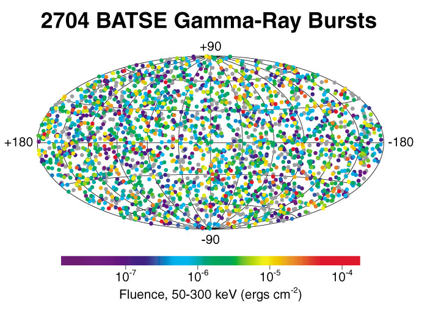

本文不是纯正的科学，其中幻想与科学混杂，请勿用于科学参考。对科学不感兴趣的诸位可以跳过第一部分的科学基础，直接进入脑洞阶段。
伽玛暴的科学
伽玛暴，即 gamma-ray burst， 是现代天体物理中一个尚未解决的难题。在极短的时间天空中某点的伽玛射线（gamma ray）强度突然剧增，然后又骤减，释放巨大的能量。目前观测到的伽玛暴有几个特点，除了光子能量高、释放能量大、持续时间短等特点，它们在天空中的分布的各项同性（各个方向均匀分布）的特色也是非常令人类痴迷的。

现在的理论暗示了某些类型的 GRB（gamma-ray burst，下文同） 可能跟恒星的核心塌缩过程有关1。实际上我们甚至观测到了 GRB 与核心塌缩超新星爆发的关联：GRB 980425，红移为 $z = 0.0085$，同样的方向发现的超新星爆发是 1998 bw，为 Type Ic 型。
在天体物理理论中，是考虑 GRB 可能是带有方向性的，因为它的能量太大了，倘若 GRB 释放能量的时候是各个方向等同的，那么它所释放的总能量远超过了整个超新星所能释放的总能量，这是极难理解的，我们无法找到这样一个物理过程。所以理论上的一个解释是，GRB 是由高速运动的物质的相对论束流效应（relativistic beaming effect）产生的，这种 beaming effect 可以使得能量的释放集中在物质前进的方向，而且会产生蓝移使得辐射光子的能量变高。这样正好符合 GRB 的要求：集中在某个方向释放能量，不用担心整体的能量太高（太高的话甚至超过超新星的话我们就要担心能量来源了），而且是在高能光子波段。
伽玛暴作为星际战争中的武器
由于能量之巨大，我们（的脑洞）可以将 GRB（伽玛暴）跟宇宙战争联系起来。如此巨大的能量释放，用来杀害确实是效率之高，但是为了防止射线伤害到自己，需要让射线有一定的方向性。
设想这样一个场景，帝国 A 与帝国 B 发生了星际战争，帝国 A 为了消灭帝国 B 在一个星系中的据点，便朝向那个方向发射 GRB，高能射线杀死对方绝大多数有生力量。不巧这个 GRB 的方向对准了地球，就被我们看到了。
然而我们所观测到的 GRB 是各向同性的，也就是说在天空中各个方向的 GRB 的数密度大致相同，倘若这是战争，那么就说明战争在我们周围均匀的发生着，起初看来这是非常难以理解的，除非我们宇宙之中文明非常多，而且战争是文明历史上正常的事件。倘若战争这种事情发生非常频繁的话，在整个宇宙尺度上，从地球看来各项同性也就不是那么难以理解了。
极端古老的智慧生命
在 The Highest Redshift Gamma-ray Bursts2 一文中，可以发现有些 GRB 可以发生在非常古老的宇宙中，GRB 最古老的可以接近红移 103。
那个时候产生智慧生命还要爆发战争是很难解释的。不过 Harvard Center for Astrophysics 的教授 Abraham Loeb 曾经写过一篇名为 The Habitable Epoch of the Early Universe 文的文章4，试图证明在宇宙早期（红移 136 到 99，即宇宙诞生之后的 1.0 到 1.7 亿年）具备化学生命产生的条件。5
除了假定这些早期的生命，我们还需要假定他们的大规模破坏性的武器跟当前具有类似的行为，即产生大量的高能光子，而且持续时间短暂。其中两种可能性是，古老的文明一直延续到今天，或者虽然灭亡了但是遗迹被后来的文明发现，复制出了这种武器。
或许，这种武器就单单是让恒星坍缩而已，本身是很容易想到的一种威力巨大的武器。随着文明的发展，一旦他们有了这样的能力，这种武器就会出现。
GRB 作为星际飞船推进器的残留
星际航行需要消耗的能量非常多，然而更加重要的是，快速的星际航行所需要的能量密度也非常大，这样剧烈的物理过程几乎全部都有光子辐射，如果能量密度很大，产生的会是高能光子，即 gamma ray。例如采用正反物质湮灭作为能源的话，要产生大量的伽马射线。
而为了飞船的安全，需要把这些有害射线导向远离飞船驾驶员的方向——不管是自然的结果还是人为设计的过程，而如果这个方向正好是地球的方向，那么我们就看到了一次伽玛暴。
如果要解释为外星飞船的话，Mia Molvray 在 1994 年写的这篇 Gamma Ray Bursters: Unexplained Lights in the Sky6 无疑提供了一些思路。
Mia Molvray 在文中提到了，倘若要往一些遥远的殖民地运送物资，可以使用高速飞行的无人飞船（这样的话也无人在乎狭义相对论的时间效应导致的人生变故，因为是无人的）。不管他们使用的是什么能源，不同的发动机有不同的特征，包括伽玛射线能量随着时间变化的曲线、能量谱等等，会有些许差异。如果找对了方法，我们或许能够将这些飞船从其他的 GRB 中区分出来。
使用科学的方法探测外星文明的太空飞船的想法很早就有了，早在上个世纪五六十年代就已经开始了，而到了七十年代相关论文的数量就开始增多了7。 实际上相对论速度的飞船飞行的时候，确实会由于与地球的相对论性速度而产生上面提到的 relativistic beaming effect，而很多不同类型的推进技术可能产生的光谱也频繁在论文中出现，具体相关观测数据的分析也有不少，例如 Michael Harris 的这篇 Limits from CGRO/EGRET Data on the Use of Antimatter as a Power Source by Extraterrestrial Civilizations8 中就分析了 Compton Gamma Ray Observatory 的数据，如果这些伽玛暴现象为正反物质湮灭的结果的话，那么几乎可以肯定是人工的现象而非自然现象。
关于 GRB 来自星际飞船的疑问
然而如果这些 GRB 中真的有些是外星飞船产生的，那么有几个问题需要解释。
- 如果是飞船，很可能有船坞，也就是说飞船可能会从相同的地方发射。这与我们会看到同一地点出现多次 GRB，这是没有被观测到的。[citation needed] 或许解释是，由于 GRB 的方向性，恰巧对准地球只是一个巧合，由于船坞在轨道上，会转动、移动，大多时候不会朝向地球。
- GRB 是漫天都是的，而且均匀分布。原因可能是由于 GRB 的方向性（相对论速度飞行的飞船的 relativistic beaming effect 所导致的），而飞船运动方向可能在变化，从而导致仅仅在某些特殊情况，这些 GRB 可以被我们看到，并且持续很短的时间。另外，飞船产生的只是我们所观测到的 GRB 其中非常非常少的一部分，另一些可能是自然的，可能是战争的，可能是其他的。
- 为什么是一个爆发，而不是持续的？这个疑问的解释可能由 2 中的飞船的飞行姿态一直在变化来解释。另外可能的解释是，或许飞船并不是完全由这种引擎推动的，或许这种引擎只是用来引发某种效应。例如可能飞船需要点燃引擎几秒钟，然后可以进入超空间了。所以我们只能观测到非常短暂的 GRB。
- 为什么他们不来找我们地球？这就归结到费米悖论了。不过或许，像《基地》里面的银河帝国一样，这些文明来自地球，但是由于种种原因，他们已经忘却了地球，不想回到地球，被某些谣言所恐吓，想要保存地球这种新生的文明等等。
注释
-
恒星的核心塌缩（core collapse）过程，即恒星核心塌缩的过程。稳定的恒星是引力与向外的压强平衡的结果，倘若恒星引力越来越大，从而用来平衡引力的压强不再足以支撑整个恒星，恒星就会塌缩，直到产生新压强形成新的平衡，或者形成黑洞。超新星根据有没有氢谱线分类两大类，其中第一类中 b 型和 c 型（Ib 型和 Ic 型）被认为是核塌缩形成的。 ↩
-
The highest redshift gamma-ray bursts - Tanvir, N.R. arXiv:1307.6156 [astro-ph.CO] ↩
-
红移物体的光谱往红端移动，在宇宙学中红移是表示推行速度的一个量，根据宇宙学模型可以根据红移计算目标距离我们的距离，也可以计算目标距离宇宙诞生之初的时间。第一批恒星形成与红移 20，而第一批星系形成于红移 6.58。 ↩
-
arXiv:1312.0613 [astro-ph.CO] ↩
-
这是一篇很有趣的论文，因为除了证明这些，论文中还提到了宇宙早期的生命可能通过 panspermia 转移到了其他的新的形式中。 ↩
-
http://www.molvray.com/sf/grb/grblog2.htm ↩
-
http://www.i4is.org/the-interstellar-index-archive ↩
-
J. British Interplanetary Soc. Vol. 55, p. 383 (2002). arXiv 链接：http://arxiv.org/abs/astro-ph/0112490v3 ↩